여는 말
스크린 위에서 보던 익숙한 글자가 종이 위에 인쇄되었을 때, 어딘가
다르게 느껴졌던 순간이 있었다. 분명 같은 폰트였지만, 미묘한 차이가
감지되었고, 그 차이의 정체가 궁금해졌다. 조사를 거듭하며 알게 된
사실은, 폰트는 단순한 형태의 디자인이 아니라, 사용되는 매체와 환경에
따라 다르게 보이고 읽히도록 정교하게 설계된다는 점이었다.
스크린에서는 픽셀이라는 빛의 단위 위에서, 인쇄에서는 종이와 잉크가
만들어내는 질감 위에서 폰트는 각기 다른 방식으로 조정되고 해석된다. 이
프로젝트는 그러한 차이에 대한 탐구로부터 시작되었다. 폰트 기술의 발전
과정을 정리하고, 스크린과 인쇄 환경에서 각각 폰트가 어떻게 구현되고
조판되는지를 조사하며, 동일한 폰트를 서로 다른 조건에서 적용해보는
실험을 포함한다.
이를 통해 폰트가 단지 시각적 요소를 넘어, 매체와 감각의 경계에서
얼마나 섬세하게 작동하는지를 살펴보고자 한다.
책 미리보기
책 자세히 보러가기디지털 활자의 이해
폰트
생김새와 크기가 같은 한 벌의 활자 또는 디지털 파일.
‘녹음’(용해), ‘주조’를 뜻하는 프랑스어 ‘fonte’에서 유래했다.
활판인쇄에서 폰트는 특정한 활자 스타일, 굵기, 크기의 타입페이스를
말한다. 즉 하나의 타입페이스는 다양한 크기, 굵기, 스타일의 폰트로
구성된다. 예를 들어 ‘개러몬드’ 타입페이스는 ’로만, 볼드, 이탤릭’
폰트로 구성되어 있다. 오늘날에도 여전히 특정한 활자꼴과 활자 스타일을
가리키지만, 더는 특정한 활자 크기를 가리키지는 않는다. 디지털 조판
시스템에서는 어떤 크기의 활자라도 자유자재로 만들어 낼 수 있기
때문이다.
활자
반복해서 사용할 수 있도록 유형화하고 고정화하여 조립과 해체가
가능한 글자.
활판인쇄시대에는 나무나 쇠 따위에 고정하여 반복 사용할 수 있는
글자(movable type)를 뜻했지만, 디지털시대로 넘어 오면서부터는 특정
재료와 상관없이 유형화와 고정성이라는 본질적 특성으로만 정의된다.
활판인쇄시대에는 활자의 재료를 중시하여 그에 따라 나무활자, 금속활자
등으로 표현된다.
서체
글씨체와 활자체를 함께 이르는 말
글씨에 일정하게 나타나는 형식과 인상, 즉 글씨체를 의미 했으나
오늘날에는 활자체를 포함하여 이르는 말로 쓰인다.
글꼴
글자꼴에서 유래한 말로서 오늘날에는 활자에 일정하게 나타나는 형식과
인상, 즉 활자체를 이르는 말.
글꼴과 폰트는 같은 의미로 사용되기도 하지만, 타이포그래피에서 ‘글꼴’은
활자의 형식과 인상, 즉 활자체를 의미하고 ‘폰트’는 활자체의 크기, 너비,
두께, 스타일 등의 변형을 지칭 한다는 차이가 있다
디지털 폰트의 정의
디지털 활자컴퓨터 환경에서 디지털 프로그램으로 제작한 활자.
디지털활자 이전까지는 글자를 실제로 쓰거나 그린 뒤에 활자를 제작했으나, 디지털활자는 그러한 과정없이 컴퓨터 환경에서 사용하는 프로그램 안에서 글자를 표현한다. 초기의 디지털활자는 비트맵이었고 기술 발전으로 글자의 윤곽을 매끄럽게 표현할 수 있는 벡터 형식으로 발전했다. 디지털 기술의 장점인 복제와 변형이 쉬워서 빠르게 활자를 생산할 수 있게 되었으며, 나아가 그리지 않은 글자까지도 자동으로 생성할 수 있게 되었다.
디지털 폰트
디지털 프로그램으로 그린 활자로 만든 폰트.
컴퓨터, 스마트폰, 전광판 등 디지털 기기에서 표현되는 모든 폰트를 이른다. 디지털 방식으로 저장되며, 제작 방식에 따라 비트맵 폰트와 벡터 폰트로 나뉜다.
베리어블 폰트
하나의 폰트 파일에 여러 스타일 변형을 포함할 수 있는 폰트 형식.
굵기(Weight), 너비(Width), 스타일(Style), 시각적 크기(Optical size) 등의 속성을 축(axis)으로 만들어서 조정할 수 있다. 베리어블 폰트의 경우 굵기와 스타일 또한 하나의 파일에 담을 수 있어 폰트의 기본 개념이 확장되었다.
픽셀, 비트, 벡터, 해상도 개념
픽셀picture element의 줄임말로 화면 매체에서 가장 작은 단위의 점.
해상도
① 인쇄 또는 출력할 때 이미지를 구현하는 정밀도.
② 이미지의 정밀도를 나타내는 지표
컴퓨터, 스마트폰, 전광판 등 디지털 기기에서 표현되는 모든 폰트를 이른다. 디지털 방식으로 저장되며, 제작 방식에 따라 비트맵 폰트와 벡터 폰트로 나뉜다.
픽셀과 타이포그래피의 관계 픽셀 밀도는 타이포그래피의 가독성에 직접적인 영향을 미친다. 픽셀 밀도가 낮은 화면에서는 텍스트가 흐릿하게 보일 수 있으며, 이는 독자의 피로도를 증가시킬 수 있다. 반면, 높은 픽셀 밀도를 가진 화면에서는 텍스트가 더 선명하게 표시되어 가독성이 향상된다. 이처럼 픽셀과 해상도는 디지털 화면에서 텍스트의 가독성과 시각적 품질을 결정하는 중요한 요소이다. 디자이너는 이러한 요소들을 고려하여 최적의 타이포그래피를 구현해야 하며, 이는 사용자 경험을 향상시키는데 기여한다.
비트맵
컴퓨터에서 디지털 이미지를 저장하거나 표현하는 데 쓰이는 이미지 파일 형식 또는 메모리 저장 방식.
이미지를 확대하면 각 경계선들이 계단 형식으로 보이며,벡터 방식의 이미지나 글자에 비해 상대적으로 처리 속도가 느리고 데이터의 용량이 크다는 단점이 있다.
벡터
컴퓨터에서 디지털 이미지를 점의 거리와 방향으로 저장하거나 표현하는 방식.
개별 화소를 기억하는 것이 아니라 점을 연결하는 선분으로 이미지를 표현하는 방식이다. 이미지를 확대하거나 축소해도 품질 저하 없이 재현할 수 있다.
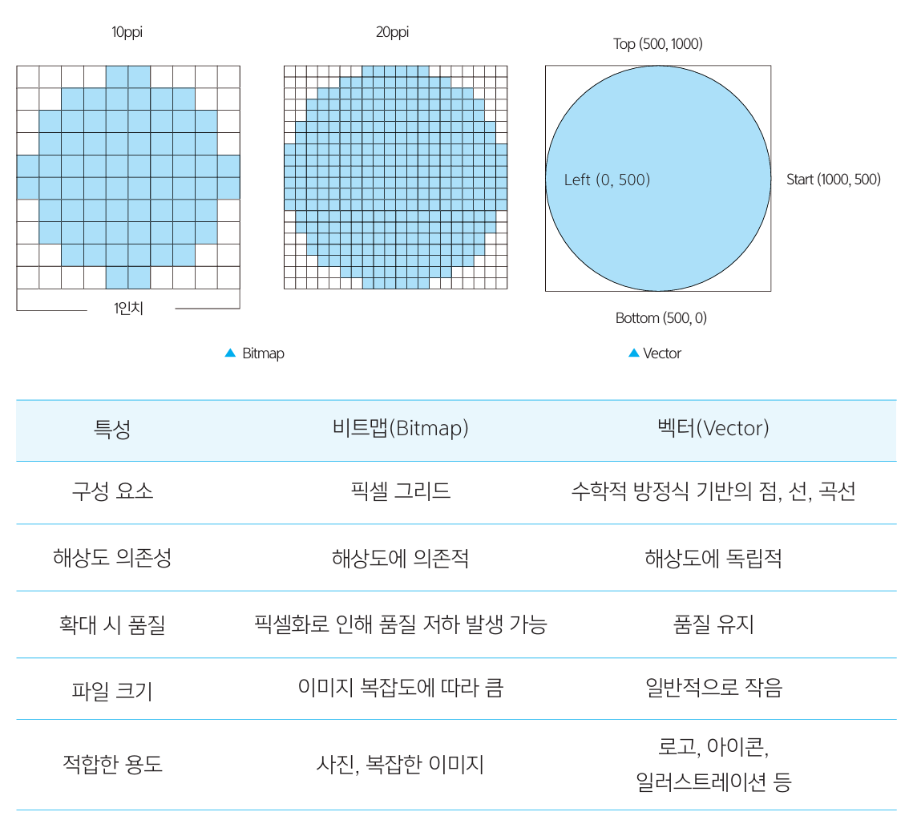
폰트의 발전
스크린폰트
스크린에서 글자를 출력하기 위한 폰트.
지면이 아닌, 브라운관 화면, LCD 모니터, 프로젝션 스크린 등의 영상 매체에
쓰는 폰트를 아우르는 말이다. 초기 컴퓨터 모니터의 해상도가 낮은 이미지를
표현하는 성능이 좋지 않았을 때, 비트맵폰트를 화면에 사용했으며, 그 때문에
비트맵폰트를 스크린폰트라고 부른다.
디지털폰트
디지털 형식으로 표현되는 모든 폰트를 이르는 말.
일반적으로 점으로 표현되는 비트맵폰트와 선으로 표현되는 벡터폰트로
유형이 나뉜다.
비트맵 폰트
디지털 화면에서 글자를 가장 작은 단위인 픽셀(pixel)로 표현한 폰트.
각 문자의 형태가 격자 그리드 위에 픽셀 단위로 고정되어 있기 때문에,
곡선은 계단처럼 보이거나 깨져 보일 수 있다. 이 폰트는 용량이 작고 출력
속도가 빠르며, 화면 해상도가 낮거나, 그래픽 처리 성능이 낮은 환경(예: 구형
디스플레이, ATM, 간판 등)에서 주로 사용되었다.
다만 하나의 폰트 파일에 특정 크기만 저장되기 때문에, 그 외의 크기에서는
형태가 무너지고 곡선이 왜곡되기 쉽다. 출력 시에는 일반적으로 벡터 기반
폰트로 자동 대체되기도 한다.
오늘날 우리가 사용하는 대부분의 “비트맵처럼 보이는 폰트”는 실제로는
픽셀화된 외형을 가진 트루타입(TrueType), 오픈타입(OpenType),
포스트스크립트(PostScript) 폰트이며, 비트맵이 아닌 윤곽선 기반
벡터 폰트다. 하지만 여전히 많은 디자이너들이 픽셀화된 글자 형태의
시각적 기하학을 디자인 요소로 활용하고 있으며, 이러한 스타일은 종종
디지털스러운, 레트로한 감각을 전달하기도 한다.
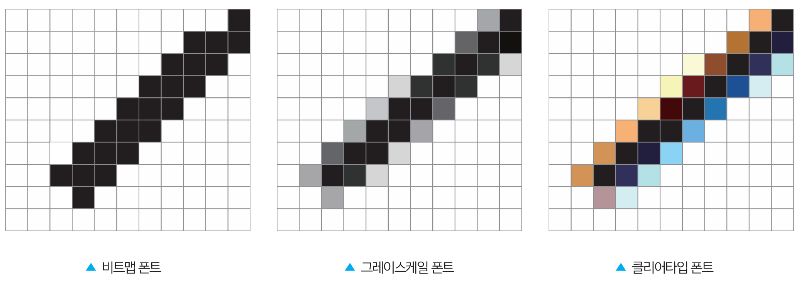
그레이스케일 폰트
검은 픽셀로 표현되는 비트맵 폰트에서의
곡선을 부드럽게 보이도록, 검은 픽셀을 여러
단계의 회색으로 구현한 폰트.
글자를 작은 크기로 보았을 때, 거친 곡선이 마치
매끈한 곡선처럼 보인다.
클리어타입 폰트
검은 픽셀로 표현되는 비트맵 폰트에서의
곡선을 부드럽게 보이도록, 검은 픽셀을 여러
단계의 회색으로 구현한 폰트.
RGB로 구현되어서 글자가 알록달록해 보일 수
있다.
벡터폰트
해상도와 관계없이 크기를 변화시켜도 깨지지 않는 윤곽선 방식의 폰트.
RGB로 구현되어서 글자가 알록달록해 보일 수
있다.
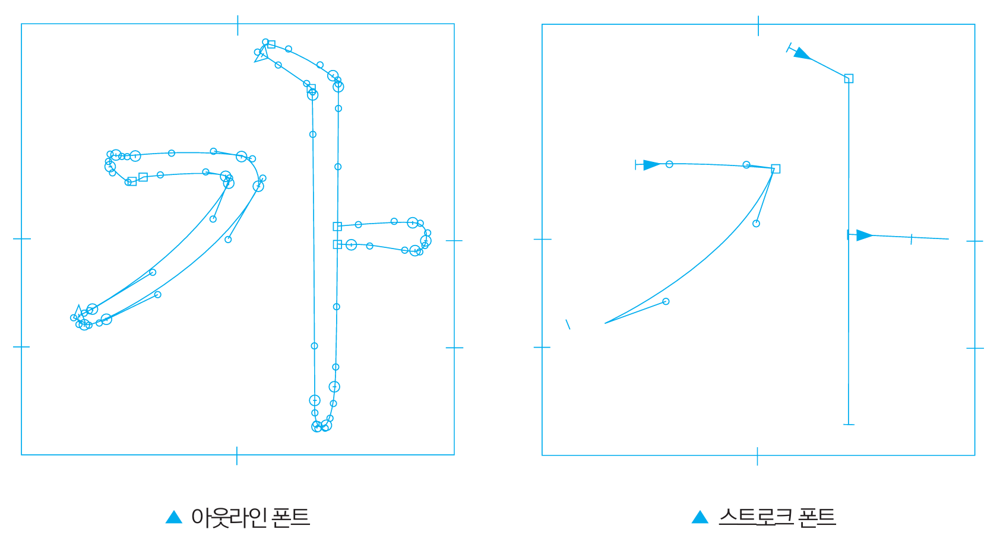
아웃라인 폰트
글자의 외곽을 선으로 그린 닫힌 면 상태의 폰트.
일반적으로 사용하는 벡터 폰트는 대부분 아웃라인 폰트라서 벡터 폰트와
아웃라인 폰트를 같은 말로도 쓴다.
스트로크 폰트
글자의 구조를 단선으로 표현하고, 글자 획 두께는 사용하는 프로그램에서
지정하여 표현하는 폰트.
하나의 구조로 다양한 무게(획 두께)의 폰트를 구현할 수 있다. 디지털
지도처럼 화면을 확대 축소해도 글자의 획 두께를 일정하게 표현해야 하는
곳에 쓰인다.
베지에곡선
벡터그래픽에서 글자의 부드러운 윤곽을 만들기 위해 사용하는 곡선의 표현
방식. n개의 점으로부터 얻어지는 곡선이며, 패스는 여러 개의 베지에 곡선이
연결되어 이루어진 선이다.
폰트 포맷
Type 1, TrueType, 그리고 OpenType은 오늘날 가장 널리 사용되는 대표적인
디지털 폰트 포맷이다. 이 중 그래픽 디자이너들은 1980년대 후반부터 출판
분야에서 널리 쓰인 Adobe의 PostScript Type 1 폰트를 오랫동안 사용해왔을
가능성이 높다. 반면, 웹 디자이너나 마이크로소프트 윈도우 사용자는
TrueType 폰트에 더 익숙할 것이다. TrueType은 Apple과 Microsoft가 공동
개발한 포맷으로, 각 사의 운영체제에서 시스템 기본 폰트로 채택되어 왔다.
최근에는 두 포맷을 통합한 형태인 OpenType 폰트가 등장해 가장
범용적이고 강력한 포맷으로 자리잡았다. 하나의 파일에 다양한 문자 세트와
고급 타이포그래피 기능을 담을 수 있어 디지털과 인쇄 환경 모두에서 폭넓게
사용되고 있다. 폰트 포맷 간의 기술적 차이를 완벽히 이해하지 않아도
괜찮다. 중요한 것은, 어떤 환경에서 어떤 포맷이 사용되는지를 알고, 목적에
맞는 적절한 폰트를 선택하는 감각을 갖는 것이다.
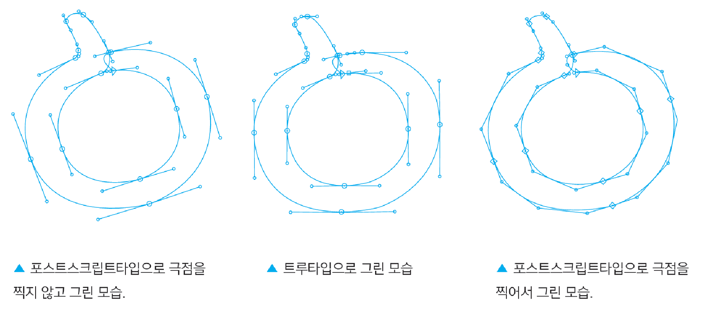
포스트스크립트타입
어도비(Adobe)에서 개발한 벡터 폰트 중에서 두 점 사이의 곡선을 2개의
점으로 조절하는 방식.
윤곽선 방식 폰트를 불러들여 글자크기와 모양을 자유롭게 조정할 수 있고,
고품질의 글자와 도형을 프린터로 인쇄하거나 화면에 재현할 수 있어 고급
워드프로세싱이나 전자출판에 필수적이다. 1985년 애플사가 포스트스크립트
번역기가 내장된 레이저프린터를 생산하면서 업계 표준이 되었다.
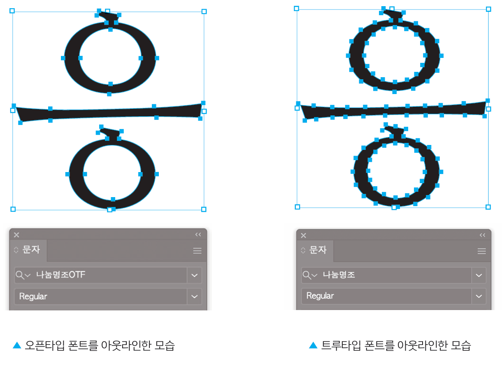
오픈타입 OTF
어도비와 마이크로소프트가 공동으로 만든 다국어 폰트 시스템을 위한
포맷.
PS-Type 또는 TTF 포맷의 데이터를 선택하여 담을 수 있는 가방과 같은
개념의 폰트 포맷으로, 폰트의 활용성을 높일 수 있는 다양한 기능을 포함시킬
수 있다.
오픈타입 폰트는 트루타입 폰트에는 없는 오픈타입 기능이 지원되기 때문에
편집 상황에 맞는 다양한 글자 형태를 쉽게 적용할 수 있다는 장점을 가지고
있다.
트루타입 TTF
벡터 폰트 중에서 두 점 사이의 곡선을 1개의 점으로 조절하는 방식.
글자 모양을 정교하게 다듬는 데에 제약이 있지만, ‘포스트스크립트타입’보다
기술의 제약이 적어서 다양한 매체에 널리 사용되고 있다. 특히 저해상도의
매체에 주로 사용된다. 애플과 마이크로소프트(MS)가 공동으로 개발한
형식이다.
TTF 포맷은 현재까지 가장 오랫동안 쓰여진 일반적인 글꼴 저장형식으로,
주로 일반 문서 작업이나, 저해상도 출력 및 웹사이트에 적용할 이미지 제작
등에 사용된다. 윈도우 운영체제에서 주로 쓰이는 포맷이다.
힌팅이란?
디지털 매체가 등장한 이후, 글자는 잉크가 아닌 픽셀로 표현되기 시작했다.
이제 화면 위의 글자는 해상도에 따라 형태가 달라질 수 있고, 이는
디자이너가 의도한 디자인과 다르게 왜곡되는 문제로 이어지기도 한다.
특히 낮은 해상도나 작은 크기에서는 글자가 계단처럼 울퉁불퉁하게 보이는
‘에일리어싱(aliasing)’ 현상이 자주 발생한다. 이러한 문제를 보완하기 위해
힌팅(Hinting) 기술이 도입되었다. 힌팅은 폰트를 출력할 때, 디스플레이
환경에 맞춰 글자의 형태를 미세하게 보정하는 기술이다. 힌팅 방식은 크게 두
가지로 나뉜다
오토 힌팅
래스터화 소프트웨어를 이용하여 일정한 방식에 따라 모든 글자를
기계적으로 처리하는 힌팅 방식.
자동화된 알고리즘을 기반으로 하므로 시간과 비용이 절감된다. 오토힌팅은
오픈소스 폰트나 초기 테스트용 폰트에서 자주 사용된다
매뉴얼 힌팅
사람이 개별 글자에 일일이 부가적인 글자 정보를 추가하는 힌팅 방식.
모든 글자에 각기 작업을 해야 하므로 인력과 시간이 매우 많이 든다.
매뉴얼힌팅이 적용된 한글 폰트로는 나눔고딕체, 맑은고딕체, 서울서체 등이
있다.
레스터라이징과 힌팅
백색 기반의 화면에서는 여전히 두 가지 본질적인 문제가 존재한다. 글자를
정확하게 표현하기 위해서는 점과 곡선이 픽셀 그리드에 정렬되어야 한다는
점이다.
이를 위한 과정이 바로 레스터라이징(Rasterizing) 또는
렌더링(Rendering)인데, 이 과정에서는 필연적인 타협이 필요하다.
만약 화면이 흑백만 출력할 수 있다면, 가능한 방법은 두 가지다.
글자가 픽셀 그리드의 윤곽선 안에 있으면 픽셀이 켜져 검은색이 되지만,
윤곽선 끝에 걸치거나 바깥에 있으면 픽셀이 꺼져 보이지 않게 된다.
문제는 두 형태가 하나의 그리드 안에 같은 방식으로 놓일 수 없어서, 동일한
글자 구조라도 다르게 보일 수 있다는 점이다. 특히 글자의 크기가 작아질수록
왜곡이 심해지는데, 이를 막기 위해 필요한 것이 바로 힌트(Hint)다.
예를 들어, 레스터라이징 소프트웨어에 “가로선 두께는 최소 1픽셀
이상”이라는 조건을 주거나, “획 두께는 서로 일정하게 유지해야 한다”는 식의
추가 정보를 넣는 것이다.
글자가 크기에 따라 다르게 보인다면, 힌팅(Hinting)이 되어야 한다. 글자가
선명하게 보인다면, 아마 수작업 힌팅을 거쳤을 가능성이 높다.
안티에일리어싱과 서브픽셀 렌더링
힌팅을 잘 했더라도, 흑백 픽셀 그리드에서 곡선이나 사선에는 여전히
계단 현상(Jaggies)이 생긴다. 이를 부드럽게 보이게 해주는 기법이
안티에일리어싱(Anti-aliasing)이다. 간단히 말하면, 글자를 흐리게 만들어
테두리를 자연스럽게 보이게 하는 방법이다. 이보다 더 정교한 방법은
서브픽셀 렌더링(Subpixel Rendering)이다. 부분픽셀 렌더링은 각 픽셀이
빨강·초록·파랑의 서브픽셀로 구성된 LCD 화면의 구조를 활용해 더 세밀한
색 조정으로 실제보다 더 높은 해상도처럼 보이도록 한다.
안티에일리어싱과 서브픽셀 렌더링
힌팅을 잘 했더라도, 흑백 픽셀 그리드에서 곡선이나 사선에는 여전히
계단 현상(Jaggies)이 생긴다. 이를 부드럽게 보이게 해주는 기법이
안티에일리어싱(Anti-aliasing)이다. 간단히 말하면, 글자를 흐리게 만들어
테두리를 자연스럽게 보이게 하는 방법이다. 이보다 더 정교한 방법은
서브픽셀 렌더링(Subpixel Rendering)이다. 부분픽셀 렌더링은 각 픽셀이
빨강·초록·파랑의 서브픽셀로 구성된 LCD 화면의 구조를 활용해 더 세밀한
색 조정으로 실제보다 더 높은 해상도처럼 보이도록 한다.
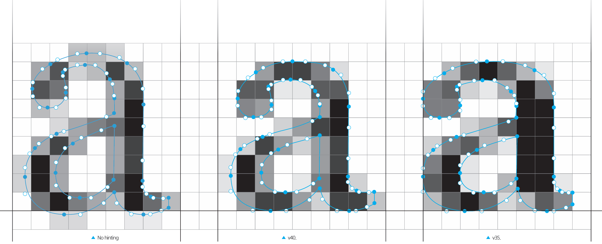
종이의 분류
비도공지
종이 표면에 도공액(코팅액) 처리를 하지 않은 인쇄용지.
펄프의 배합에 따라 특급, 1급, 2급, 3급으로 나뉜다. 보통 상질 지, 중질지,
하질지 등으로 구분된다. 비도공지는 원지 그대로의 촉감을 살렸다는 장점이
있어 출판 인쇄에 주로 사용한다.
도공지
인쇄적성을 높이기 위해 표면에 도공액 처리를 한 종이.
도공액 종류나 처리 방식에 따라 종이의 질감과 광택이 달라진다. 도공 처리는
흔히 코팅이라고 불리며, 종이의 단면 혹은 양면 모두 적용이 가능하다.
도공지는 대부분 면이 광택기 나고 매끄럽기 때문에 상업용 인쇄물에 많이
사용한다.
물리적 특성
최상의 결과를 얻기 위해서는 종이의 물리적 특성을 고려해야 한다.
두께
종이 한 장의 두께는 마이크로 미터(㎛)로 표시하며 1㎛는 0.001mm이다. 종이의 두께는 제품 제작 시에 적합성을 결정하는 데 중요한 역할을 한다.
지합
종이의 펄프들의 균일한 분포도를 말하며, 균일한 지합은 인쇄 상태와 후가공의 용이성에 영향을 준다.
투기도
종이에 공기가 통과하는 정도를 말하며 종이의 비침 정도에 영향을 준다. 대기압에서 일정량의 공기가 종이를 통과하는 시간 등으로 투기도를 측정한다.
평활도
종이의 평평한 정도를 뜻한다. 평활도가 낮은 종이는 잉크의 전이가 낮기 때문에 두꺼운 잉크층이 형성되고, 이로 인해 종이가 달라붙는 현상이 발생하며 추가 공정이 요구된다.
평량
종이 규격 중 1㎡당 무게를 말하며, 단위는 g/㎡이다. 평량이 높을수록 인쇄 상태가 안정적이며 종이가 두꺼워 비침이 없기 때문에 양면 인쇄에 많이 사용된다.
방향성
종이를 만들 때 펄프(종이의 재료)가 배열되면서 자연히 생겨나는 결이다. 펄프의 배열이 기계 방향과 같을 때는 종목, 수직 방향일 때는 횡목이라고 한다.
인쇄 종류
평판인쇄
잉크가 묻는 화선부와 잉크가 묻지 않는 비화선부가 평면이며, 물과 기름의
반발 현상을 이용하는 화학적 인쇄 방식.
이용 범위가 넓고 모든 종류의 종이에 인쇄할 수 있으며, 수정이 쉽고
대량으로 인쇄할 수 있는 등 장점이 많은 방식이지만 오목판인쇄만큼
계조를 풍부하게 표현하기 어렵다는 단점이 있다. 평판인쇄는 작업 공정이
전산화되면서 책, 신문, 잡지 제작에 가장 많이 활용되고 있다
오프셋인쇄
인쇄판의 잉크를 고무블랭킷으로 전사한 다음 이를 다시 종이에 인쇄하는
평판인쇄 방식.
일반적으로 인쇄는 인쇄판에 잉크를 묻히거나 투과하여 직접 인쇄하는
방식이나 오프셋인쇄는 간접인쇄방식으로 인쇄 면이 인쇄용지와 직접 닿지
않는다. 오프셋인쇄기는 판동, 고무블랭킷, 압동으로 구성되며 다색인쇄뿐
아니라 정밀하고 선명한 인쇄를 할 수 있다. 또한 내쇄력이 커서 하나의
인쇄판으로 많은 양의 인쇄를 할 수 있다
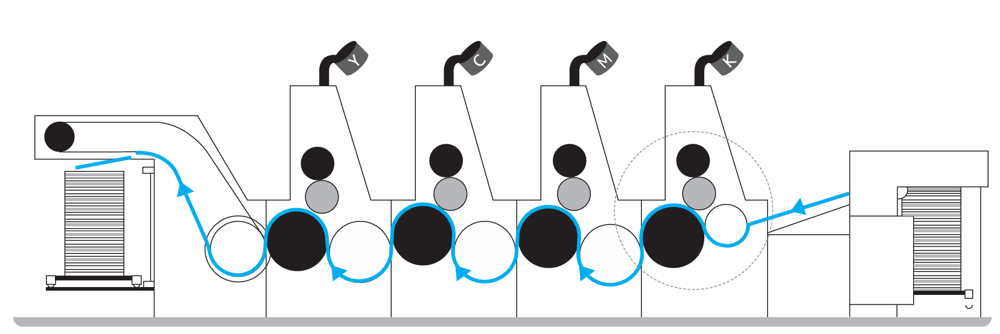
석판인쇄
기름과 물의 반발 원리를 이용해 석판석 판면에 원고를 만들고 인쇄하는
평판인쇄 방식
석판석 판면에 기름먹으로 원고를 그리고 아라비아 고무액을 그 위에 칠하면,
인쇄되지 않는 부분에는 물이 묻어 잉크가 묻지 않고 인쇄되어야 하는
부분에만 잉크가 묻는다.
UV 인쇄
자외선(UV)을 이용해 특수 잉크를 즉시 경화시키는 디지털 인쇄 방식.
일반 인쇄와 달리 잉크가 소재에 흡수되는 것이 아니라, 표면에 점착되어
경화되는 방식이다. 따라서 선명한 색상과 높은 내구성을 얻을 수 있다.
오목판인쇄 (요판인쇄)
인쇄할 부분을 오목하게 판 뒤 거기에 잉크를 채워서 인쇄하는 방식.
판재를 조각하여 약품으로 부식한 뒤 인쇄하는 조각오목판과 사진제판
기법을 활용하는 사진오목판이 있다. 사진오목판은 그라비어판(gravure
plate)이라고도 한다.
그라비어스크린과 일종의 인화지인 카본 티슈를 사용해 인쇄판을 만들며, 화선부를 이루는 점의 깊이에 따라 농담이 표현되는 오목판인쇄 방식.
판이 부식되는 정도에 따라 계조가 달라지기 때문에 농담이 풍부하고 강한 느낌을 준다. 부식이 많이 되면 그 공간에 들어가는 잉크 양이 많아져서 농도가 진해지고, 부식이 적게 되면 농도가 연해진다. 플라스틱 필름이나 알루미늄박에도 인쇄할 수 있어 과자 봉지, 비닐 봉투, 포장지를 인쇄할 때 주로 사용한다. 판면 구조에 따라 모래발 그라비어판, 백선(컨벤셔널) 그라비어판, 망점 그라비어판으로 분류되며, 부식 방법에 따라 산분법 그라비어, 간접 리지스트법 그라비어, 직접 리지스트법 그라비어로 구분된다.
잉크가 찍히는 부분을 다른 부분보다 높게 만들어 인쇄하는 방식.
볼록판을 써서 인쇄하는 모든 인쇄 방식의 총칭으로 인쇄 방법 가운데에서 가장 오래된 기술이다. 볼록판 인쇄는 평판에 비해 잉크층이 두껍고 인쇄 농도가 높다. 반면 선화, 망점의 형상이 또렷하여 인쇄물이 힘 있어 보이는 장점이 있다.
유연한 돌출 이미지 판을 사용하여 다양한 재료에 잉크를 전사하는 고속 인쇄 방식.
주로 롤투롤 인쇄 유형으로 사용되며 특히 플라스틱, 종이, 호일 등의 인쇄물에 연속 인쇄하는 용도에 적합하다.
활판인쇄
판짜기가 끝난 활판에 잉크를 묻히고 압력을 가해 인쇄하는 볼록판인쇄 방식.
나무판 한 장에 글을 조각해 글자가 고정되는 목판(木版)과 달리, 활판(活版)은 정해진 틀에 알맞은 글자를 자유롭게 짜맞추어 조판할 수 있어 살아 있는 판이라고 부른다. 오랜 기간 다방면에서 사용되었으나 전자출판이 일반화되면서 오프셋인쇄와 같은 평판인쇄 방식으로 대체되었다.
인쇄판의 구멍을 통해 판 아래 놓인 피인쇄물에 잉크를 전이해 인쇄하는 방식.
인쇄될 부분과 아닌 부분으로 나누어 판을 제작하고 인쇄될 면에만 잉크를 투과시키는 방법이다. 인쇄 면에 잉크가 많이 묻기 때문에 돌출감을 표현하기 쉽고, 판면을 인쇄하는 면에 맞추기 때문에 유연한 소재에도 인쇄를 할 수 있고 곡면인쇄도 가능하다. 금, 은, 형광색상 인쇄와 같은 특수인쇄도 할 수 있으며 상자나 플라스틱 용기, 튜브나 유리병, 티셔츠 등의 인쇄에 많이 사용된다.
인쇄하고자 하는 이미지를 섬유 재질의 천에 새기고 잉크로 화선부를 투과시켜 인쇄하는 공판인쇄 방식.
스크린 재료로 비단이나 화학섬유를 사용하며, 화선부를 빛쬐기하여 전사한 뒤 비화선부 부분에 아교를 바른다. 화선부에 뚫려 있는 미세한 구멍을 스퀴지로 밀어 잉크를 통과시키면 천 밑에 깔려진 매체에 인쇄가 된다. 색도를 자유롭게 선정할 수 있으며 종이 외에 유리, 도자기, 금속 등 다양한 소재에 인쇄할 수 있다. 그러나 망점의 표현이 정밀하지 않아 섬세한 인쇄에는 적합하지 않다.
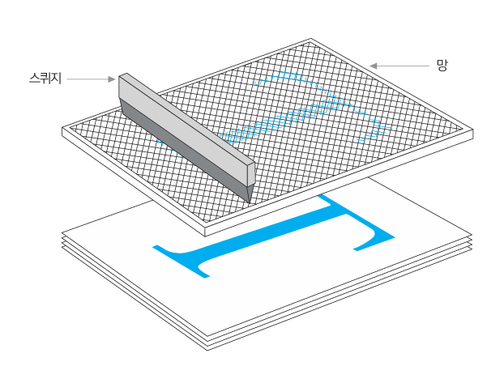
지면용(본문) 폰트를 찾고 싶을때
1. 본문용 글자체 모아보기

2. 조판해보기
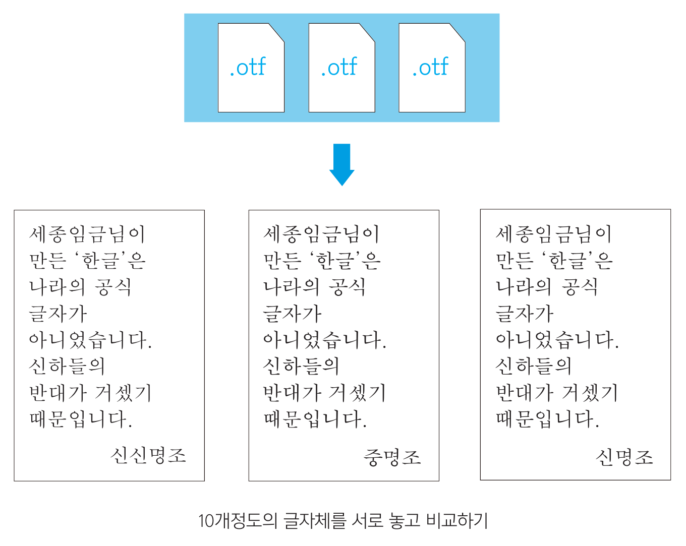
3. 출력 후 확인하기
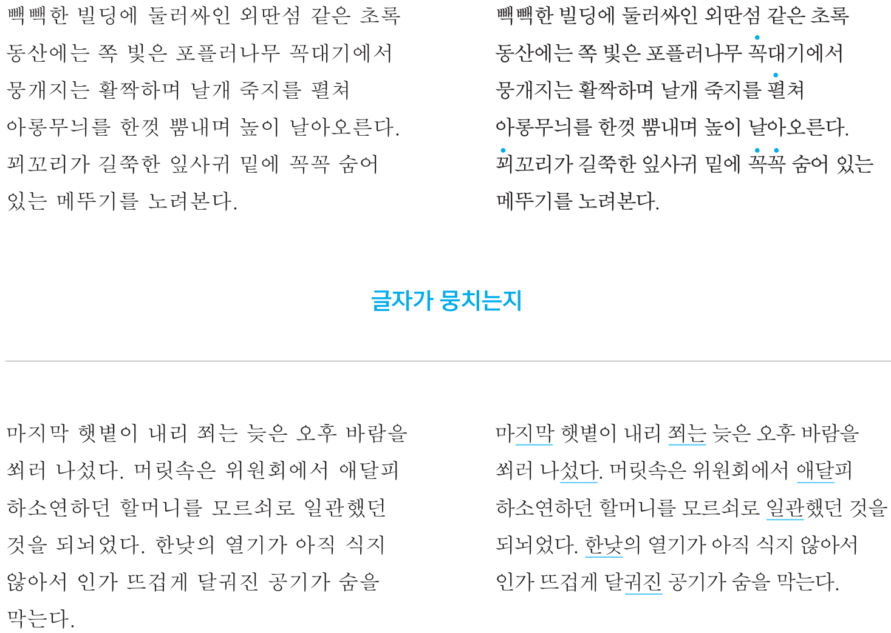
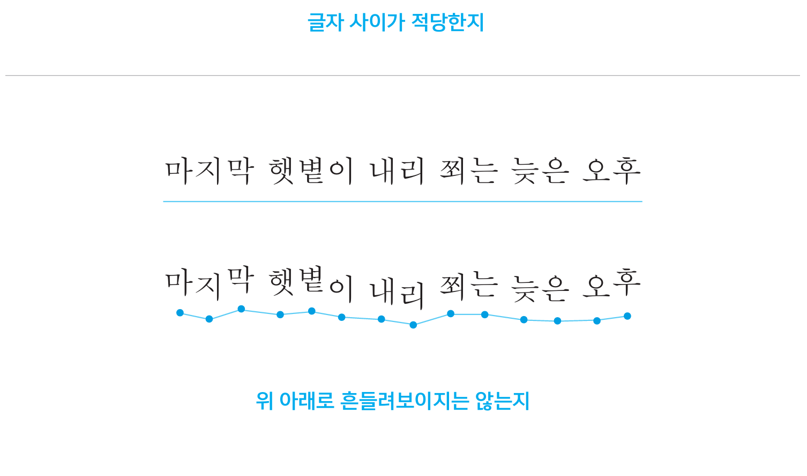
이북용 폰트와 인쇄용 폰트의 차이
이북용 폰트는 낮은 해상도와 작은 화면에서도 글자가 또렷하게 보이도록
설계된 화면용 폰트다.
작은 크기에서도 글씨가 잘 보일 수 있게 이응이나
미음 의 속공간이 크며 획의 끝맺음도 부드럽고 가로, 세로 줄기의 굵기도
비슷하다.
하지만 고해상도를 기반으로 하는 인쇄에서는 이런 점이 오히려 단점이 될
수 있기 때문에 인쇄용 폰트는 끝맺임이 날칼롭고 가로세로 줄기도 대비를
이룬다. 이북용 폰트를 인쇄용 본문 글꼴로 사용할 때는 이런 점을 충분히
고려한다
모바일용 명조체의 특징
 필압(획의 두께) 변화가 적고 획의 끝(부리)이 깔끔하게 잘려 있거나 뭉툭한
형태이다. 모바일 환경에서는 글자가 작게 보이기 때문에 이런 구조가
가독성을 높이는 데 유리하다.
또한 비교적 현대적이거나 담담한 느낌을 내고 싶을 때, 명조와 고딕의 중간
정도의 느낌을 내고 싶을 때 사용할 수도 있다.
필압(획의 두께) 변화가 적고 획의 끝(부리)이 깔끔하게 잘려 있거나 뭉툭한
형태이다. 모바일 환경에서는 글자가 작게 보이기 때문에 이런 구조가
가독성을 높이는 데 유리하다.
또한 비교적 현대적이거나 담담한 느낌을 내고 싶을 때, 명조와 고딕의 중간
정도의 느낌을 내고 싶을 때 사용할 수도 있다.
인쇄용 명조체의 특징
 포스터처럼 큰 인쇄물에서도 디테일이 살아남는 필압과 섬세한 부리의 표현이
돋보인다. 명조체 특유의 감성적이고 서정적인 분위기를 더 잘 전달할 수
있다.
대신 필압이 강하고, 부리의 끝이 섬세하게 표현될수록 글자를 작게 보는
모바일 환경에서 가독성이 떨어질 수 있다
포스터처럼 큰 인쇄물에서도 디테일이 살아남는 필압과 섬세한 부리의 표현이
돋보인다. 명조체 특유의 감성적이고 서정적인 분위기를 더 잘 전달할 수
있다.
대신 필압이 강하고, 부리의 끝이 섬세하게 표현될수록 글자를 작게 보는
모바일 환경에서 가독성이 떨어질 수 있다
➞
윤명조
모바일용 명조와 인쇄용 명조로 나눠서 비교했지만 실제로는 인쇄와 디지털 환경을 모두 고려해
폰트를 개발하는 경우가 많다.
따라서 이 구분을 절대적인 기준으로 외우기보다는, 작업물의 성격과 분위기에 맞춰 폰트를
선택하는 유연함이 더 중요하다. 예를 들어 모바일 작업이라도 서정적인 느낌을 살리고 싶다면
필압이 뚜렷하고 부리의 디테일이 살아있는 폰트를 쓸 수 있고, 반대로 인쇄물이라도 단단하고
또렷한 느낌의 명조가 필요하다면 나눔명조를 사용할 수 있다.
지면에서 고딕을 안쓰는 이유
고딕은 튀라고 만든 글자체로 책 본문에는 어울리지 않는다.
고딕체를 책에 쓰인다면 주로 잡지일 것이다.
보편적으로 고딕체가 가진 공간 때문이다. 각 글자의 면적을 동일하게
만들었고, 글자 면적도 크게 잡아 바깥 공간은 줄어들었다. 택 안에 쓰면
서체가 꽉 들어차 한 글자 한 글자가 보이기보다는 문단 덩어리처럼 보일
것이다. 즉, 많은 양을 전달할 때는 대부분의 고딕체가 가진 공간감때문에
읽기 편하지 않다는 것이다.

디지털상에서 고딕을 쉽게 볼 수 있는 이유
첫번째는 고딕체가 주는 조화로움이다. 디지털상에는 다양한 문자와
기호들이 섞여서 사용하게 된다. 부리가 없는 경우에는 서체들의 위치와
굵기만 맞으면 조화롭게 어울리는 것처럼 보이지만, 부리와 곡선 표현이
되어있는 명조는 다른 요소와 조화를 이루기 어렵다.
두번째는
고딕이 명조보다 유리한 매체 환경때문이기도 하다. 지금은
높은 해상도의 디지털 화면을 볼 수 있지만, 아직도 픽셀기반의 화면을 보는
독자가 더 많을 거다. 획마다 굵기가 다른, 심지어는 하나의 획에서도 굵기가
가늘어졌다가 굵어지는 명조는 제한된 픽셀 위에서 그 표현을 다 전하기
어렵다. 반면 고딕은 네모 반듯한 편이라 픽셀에서 덜 깨지는 특성이 있다.